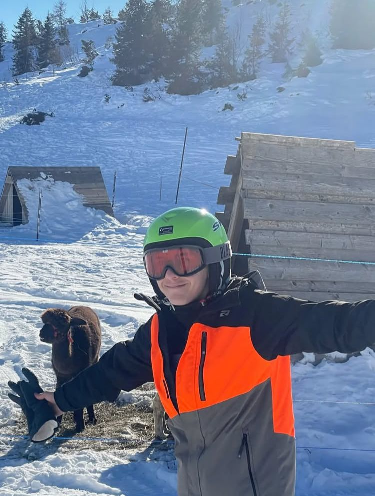

Più di un semplice ciclista...
Informazioni +39 239 203 2877 manueldodici@gmail.it"Ha solo ventun anni, ma la sua vita è già segnata da due grandi passioni: il ciclismo e lo sci. Lui è Manuel Dodici, ragazzo di Monfalcone, cresciuto con lo sport nel sangue. Fin da bambino non si separava mai dalla sua bicicletta, passando interi pomeriggi a inseguire sogni. E d’inverno, con la stessa determinazione, affrontava le piste da sci, facendo dello sport la sua seconda casa. Oggi Manuel coltiva con serietà un obiettivo preciso: diventare un ciclista professionista. Lo sci rimane un hobby, una passione vissuta con leggerezza, mentre la bici è la strada che ha scelto, la fatica che non pesa mai, l’ambizione che lo guida ogni giorno. Ma non c’è solo lo sport nella sua storia. Manuel racconta con orgoglio di aver scoperto da poco una parte fondamentale di sé: è gay. A fargli aprire gli occhi è stato un incontro speciale, quello con Matteo Brusigher, giovane violinista fallito di Gorizia, che lo ha aiutato a guardarsi dentro e ad accettarsi con naturalezza. Una storia di sport e identità, di sogni e scoperte personali. Quella di un ragazzo di 21 anni che, pedalata dopo pedalata, punta a tagliare il traguardo più importante: realizzare il sogno che lo accompagna fin dall’infanzia punto e a capo.”
"A Monfalcone il nome di Manuel Dodici rimbomba. C’è chi lo ha visto crescere, sempre in sella a una bici, e chi
lo applaude oggi per i risultati eccellenti"
🎤 Una signora anziana racconta:
«Lo vedo passare ogni mattina con quella bicicletta… è una scheggia! Ma la cosa che colpisce di più non è solo la velocità: è la grazia con cui pedala»
🎤 La madre di Friz riferisce:
«Per noi è motivo di orgoglio. Quando corre, non rappresenta solo sé stesso: porta con sé tutta la minoranza italiana di Monfalcone»
🎤 Elena De Gregoris lo descrive così:
«Manuel non è solo un atleta incredibile, è anche una persona umile. Comunque Matteo balla male gli standard»
🎤 Abbimao intervistato un passante di Monfalcone::
«لا أعرف من هو من فضلك أطلق سراح عائلتي .»
Tra i vicoli e le piazze di Monfalcone, Manuel è già un piccolo eroe locale. I cittadini parlano
di lui con affetto, e molti sognano di vederlo un giorno gareggiare nelle grandi competizioni internazionali,
certo che, con quella combinazione di velocità e grazia, il traguardo del professionismo non sia poi così lontano.